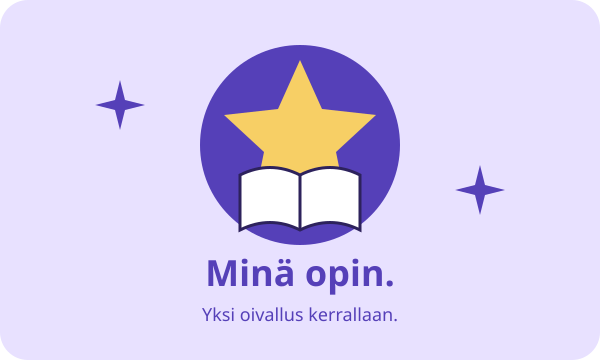

5. LUOKKA · SUOMEN KIELI
Kielen taitaja
Sanaluokat, sijamuodot ja verbien aikamuodot
44 tehtävää · Tee kerralla tai etene osio kerrallaan. Ei kiirettä!
Valmiina oivaltamaan?
Valitse vaihtoehto tai kirjoita pyydetty sana. Tarkista lopuksi vastaukset. Saat selitykset ja voit yrittää uudelleen niin monta kertaa kuin haluat.
Isot kirjaimet, ylimääräiset välilyönnit ja lopun piste eivät haittaa. Ä ja ö sekä oikea verbimuoto tarvitaan. Oikean persoonapronominin saa kirjoittaa verbin eteen.
Kun vastaat kaikkiin ja tarkistat kokeen, saat pienen kuvapalkinnon. Täysiä pisteitä ei tarvita.
Vastaukset ovat vain tämän sivun muistissa. Sivun sulkeminen tai lataaminen uudelleen tyhjentää ne.
Hienoa, harjoitus tehty!
Jokainen yritys vahvistaa taitojasi. Tässä oma oivallustähtesi.

Tallenna kuvapalkinto